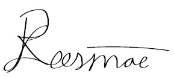
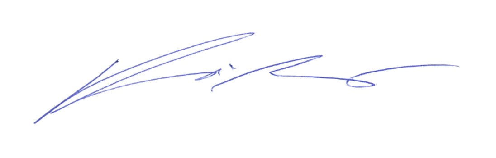
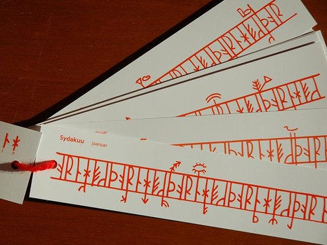

Hea kooliesindaja!
Kutsume Teie kooli õpilasi osalema programmeerimisvõistlusel “ASI Karikas”, mida korraldavad ühiselt Tallinna Tehnikaülikooli Arvutisüsteemide instituut ja Tarkvaraarenduse klubi Lapikud.
Konkurss on võistkondlik ning toimub kahes voorus. Osalema on oodatud kuni neljaliikmelised võistkonnad ning kasutada võib programmeerimiskeeli Python, Java, C, C++ või C#.
Esimeses voorus osalemiseks tuleb lahendada lisatud ülesanded ning esitada need e-posti teel: asikarikas@asikarikas.ee. Lahenduste esitamise tähtaeg on 09.02.2020 kell 23.59. Kõik esimese vooru osalejad saavad osavõtja diplomi.
Esimese vooru edukalt sooritanud võistkonnad koos juhendajaga kutsutakse lõppvooru, mis toimub Tallinna Tehnikaülikooli IT Kolledžis 14.03.2020 kell 10.00 - 14.00. Lõppvooru ülesandeks on rakendusprogrammi koostamine.
Kõigile lõppvõistlusest osavõtjatele pakutakse võistluspäeva hommikul kell 9.00 hommikusööki ning pärast võistlust lõunasööki. Ajavahemikus 14.00 - 16.00 saavad võistlejad üliõpilaste juhendamisel proovida mikrokontrollerite programmeerimist. Võitjad kuulutatakse välja kell 16.00. Kõigil lõppvoorus osalejatel loetakse TTÜ IT teaduskonda sisseastumisel ained Programmeerimine I (IAX0583) ja Programmeerimine II (IAX0584) sooritatuks.
ASI Karika toimkonna nimel,
Risto Leesmäe, Tallinna Tehnikaülikooli Tarkvaraarenduse klubi Lapikud esimees

Vladimir Viies PhD, Tallinna Tehnikaülikool ASI lõputööde kaitsmiskomisjoni esimees

ASI KARIKA 2020 eelvooru ülesanded!
NB! Mõlema ülesande lahendamine ei ole kohustuslik.
Iga ülesande lahendus annab maksimaalselt 50 punkti.
Kokku on võimalik saada kuni 100 punkti. Kaheksa parima punktisummaga võistkonda pääsevad lõppvooru. Kui maksimaalse tulemuse on saanud rohkem kui 8 võistkonda, siis finaali pääsenute arvu suurendatakse.
1. LAEVADE POMMITAMINE (mäng arvuti vastu) (50p)
Laevade pommitamine on klassikaline strateegiamäng kahe mängija vahel. Mõlemad mängijad paigutavad ruudustikku laevad ning eesmärk on hävitada vastase laevad läbi kordamööda “pommitamise”.
Antud ülesandes on eesmärk kirjutada programm, kus mängija saab võistelda arvuti vastu. Mängijal peab olema võimalik valida keerukuse tase koos laevade hulga ja suurustega. Mängureeglid võib kujundada ise, kuid allpool on välja toodud klassikalise mängu kirjeldus, millest on võimalik lähtuda.
Arvuti võiks olla iseõppiv, see tähendab, et iga mängija vastu kujundab see individuaalset strateegiat. Ise võib valida viisi, kuidas arvuti eristab erinevaid mängijaid.
Näiteid:
Kui mängija Jüri alustab mitu mängu järjest alati esimeste käikudena nurkade pommitamist, siis arvuti enam sinna laevu ei paiguta.
Kui Jüri alustab mängu alati mänguvälja keskkoha pommitamisega, siis arvuti paigutab sinna üheruudulise laeva, et meelitada sellega ümbruse tühja pommitamist, viivitades mängijat.
Klassikalisel laevade pommitamisel kehtivad järgnevad reeglid:
- Mängulaud on 10x10 ruudustik.
- Mõlemad mängijad paigutavad ruudustikku 5 laeva, mille sekka kuulub üks 5-ruudu pikkune laev, üks 4-ruudu pikkune laev, kaks 3-ruudu pikkust laeva ja üks 2-ruudu pikkune laev.
- “Pommitamine” toimub kordamööda ning selle käigus valib mängija ühe ruudu vastase ruudustikul, mida hävitada.
- Võitja on mängija, kes suudab esimesena hävitada kõik vastase ruudustikul olevad laevad.
2. Vana-Eesti ruunikalender - teha kaasaegne ruunikalender koos muistsete tähtpäevadega(50p)

Sirvikalendrit ehk ruunikalendrit on kasutanud erinevad rahvad Põhja-Euroopas. Eestis säilinud ruunikalendrite abil on võimalik hästi arvestada nädalapäevi ning päevad on loendatud nädalate järgi ühest tähtpäevast teiseni. Sirvikalendris vastab igale päevale kahe horisontaalse joone vahel olev vertikaalne kriips, kalendri- või ruunimärk.
Antud ülesandes on eesmärk koostada programm, mis tõlgib tänapäevase kalendri ümber ruunikalendriks, mis sisaldaks ka tähtpäevi rahvakalendrist.
Võimalik võiks olla kahepoolne tõlkimine, see tähendab, et ruunikalenderi saab tagasi tõlkida ka tänapäevaseks kalendriks.
Abimaterjale:
https://bit.ly/36oYbUg
http://www.tud.ttu.ee/im/Vladimir.Viies/materials/ruuniKalAbi/